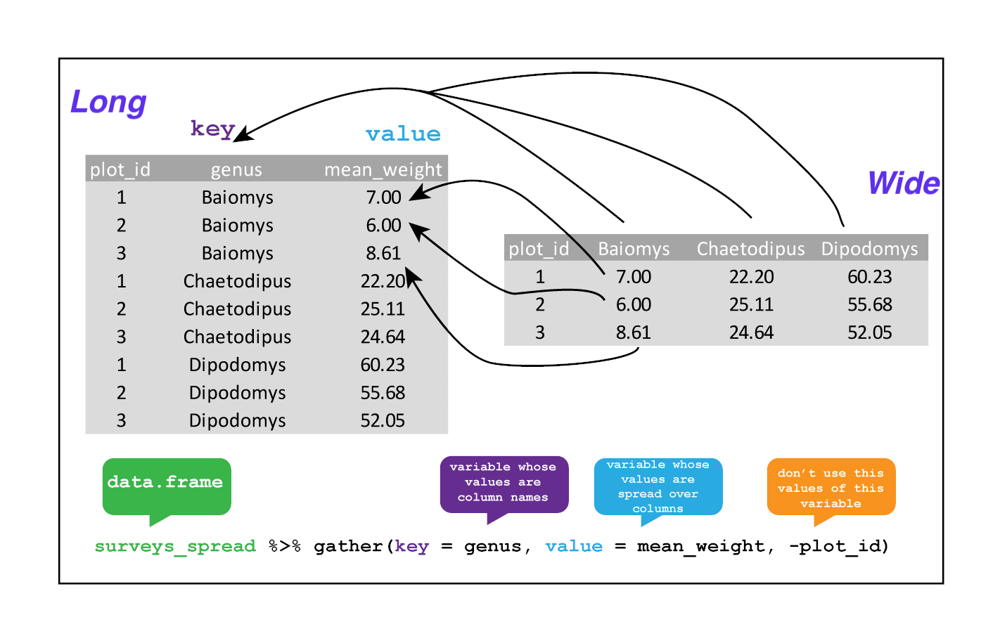

Chapter 5 Manipulating and analyzing data with dplyr
Learning Objectives
Describe the purpose of the
dplyrandtidyrpackages.Select certain columns in a data frame with the
dplyrfunctionselect.Select certain rows in a data frame according to filtering conditions with the
dplyrfunctionfilter.Link the output of one
dplyrfunction to the input of another function with the ‘pipe’ operator%>%.Add new columns to a data frame that are functions of existing columns with
mutate.Use the split-apply-combine concept for data analysis.
Use
summarize,group_by, andcountto split a data frame into groups of observations, apply summary statistics for each group, and then combine the results.Describe the concept of a wide and a long table format and for which purpose those formats are useful.
Reshape a data frame from long to wide format and back with the
pivot_wider()andpivot_longer()commands from thetidyrpackage.
5.1 Data Manipulation using dplyr and tidyr
Bracket subsetting is handy, but it can be cumbersome and difficult to
read, especially for complicated operations. Enter
dplyr. dplyr is a package for making tabular data
manipulation easier. It pairs nicely with tidyr which enables
you to swiftly convert between different data formats for plotting and
analysis.
Packages in R are basically sets of additional functions that let you
do more stuff. The functions we’ve been using so far, like str() or
data.frame(), come built into R; packages give you access to more of
them. Before you use a package for the first time you need to install
it on your machine, and then you should import it in every subsequent
R session when you need it. You should already have installed the
tidyverse package. This is an “umbrella-package” that installs
several packages useful for data analysis which work together well
such as tidyr, dplyr, ggplot2, tibble, etc.
The tidyverse package tries to address 3 common issues that
arise when doing data analysis with some of functions that come with
R:
- The results from a base R function sometimes depend on the type of data.
- Using R expressions in a non standard way, which can be confusing for new learners.
- Hidden arguments, having default operations that new learners are not aware of.
We have seen in our previous lesson that when building or importing a
data frame, the columns that contain characters (i.e., text) are
coerced (=converted) into the factor data type. We had to set
stringsAsFactors to FALSE to avoid this hidden argument to
convert our data type.
This time will use the tidyverse package to read the data and
avoid having to set stringsAsFactors to FALSE
To load the package type:
## load the tidyverse packages, incl. dplyr
library("tidyverse")The Data Transformation Cheat
Sheet
provides an overview of the dplyr grammar, offering more details and
functions that we will see in this chapter.
5.2 What are dplyr and tidyr?
The package dplyr provides easy tools for the most common data manipulation
tasks. It is built to work directly with data frames, with many common tasks
optimized by being written in a compiled language (C++). An additional feature is the
ability to work directly with data stored in an external database. The benefits of
doing this are that the data can be managed natively in a relational database,
queries can be conducted on that database, and only the results of the query are
returned.
This addresses a common problem with R in that all operations are conducted in-memory and thus the amount of data you can work with is limited by available memory. The database connections essentially remove that limitation in that you can connect to a database of many hundreds of GB, conduct queries on it directly, and pull back into R only what you need for analysis.
The package tidyr addresses the common problem of wanting to
reshape your data for plotting and use by different R
functions. Sometimes we want data sets where we have one row per
measurement. Sometimes we want a data frame where each measurement
type has its own column, and rows are instead more aggregated groups -
like plots or aquaria. Moving back and forth between these formats is
nontrivial, and tidyr gives you tools for this and more
sophisticated data manipulation.
To learn more about dplyr and tidyr after the workshop,
you may want to check out this handy data transformation with
dplyr
cheatsheet
and this one about
tidyr.
We’ll read in our data using the read_csv() function, from the
tidyverse package readr, instead of read.csv().
surveys <- read_csv("data/portal_data_joined.csv")##
## ── Column specification ───────────────────────────────────────────────────────────────────────────────────────────────────────────────
## cols(
## record_id = col_double(),
## month = col_double(),
## day = col_double(),
## year = col_double(),
## plot_id = col_double(),
## species_id = col_character(),
## sex = col_character(),
## hindfoot_length = col_double(),
## weight = col_double(),
## genus = col_character(),
## species = col_character(),
## taxa = col_character(),
## plot_type = col_character()
## )## inspect the data
str(surveys)
## preview the data
# View(surveys)Notice that the class of the data is now tbl_df
This is referred to as a “tibble.” Tibbles tweak some of the behaviors of the data frame objects we introduced in the previous episode. The data structure is very similar to a data frame. For our purposes the only differences are that:
- In addition to displaying the data type of each column under its name, it only prints the first few rows of data and only as many columns as fit on one screen.
- Columns of class
characterare never converted into factors.
We’re going to learn some of the most common dplyr functions:
-
select(): subset columns -
filter(): subset rows on conditions -
mutate(): create new columns by using information from other columns -
group_by()andsummarize(): create summary statisitcs on grouped data -
arrange(): sort results -
count(): count discrete values
5.3 Selecting columns and filtering rows
To select columns of a data frame, use select(). The first argument
to this function is the data frame (surveys), and the subsequent
arguments are the columns to keep.
select(surveys, plot_id, species_id, weight)To select all columns except certain ones, put a “-” in front of the variable to exclude it.
select(surveys, -record_id, -species_id)This will select all the variables in surveys except record_id
and species_id.
To choose rows based on a specific criteria, use filter():
filter(surveys, year == 1995)## # A tibble: 1,180 x 13
## record_id month day year plot_id species_id sex hindfoot_length weight
## <dbl> <dbl> <dbl> <dbl> <dbl> <chr> <chr> <dbl> <dbl>
## 1 22314 6 7 1995 2 NL M 34 NA
## 2 22728 9 23 1995 2 NL F 32 165
## 3 22899 10 28 1995 2 NL F 32 171
## 4 23032 12 2 1995 2 NL F 33 NA
## 5 22003 1 11 1995 2 DM M 37 41
## 6 22042 2 4 1995 2 DM F 36 45
## 7 22044 2 4 1995 2 DM M 37 46
## 8 22105 3 4 1995 2 DM F 37 49
## 9 22109 3 4 1995 2 DM M 37 46
## 10 22168 4 1 1995 2 DM M 36 48
## # … with 1,170 more rows, and 4 more variables: genus <chr>, species <chr>,
## # taxa <chr>, plot_type <chr>5.4 Pipes
What if you want to select and filter at the same time? There are three ways to do this: use intermediate steps, nested functions, or pipes.
With intermediate steps, you create a temporary data frame and use that as input to the next function, like this:
surveys2 <- filter(surveys, weight < 5)
surveys_sml <- select(surveys2, species_id, sex, weight)This is readable, but can clutter up your workspace with lots of objects that you have to name individually. With multiple steps, that can be hard to keep track of.
You can also nest functions (i.e. one function inside of another), like this:
surveys_sml <- select(filter(surveys, weight < 5), species_id, sex, weight)This is handy, but can be difficult to read if too many functions are nested, as R evaluates the expression from the inside out (in this case, filtering, then selecting).
The last option, pipes, are a recent addition to R. Pipes let you take
the output of one function and send it directly to the next, which is useful
when you need to do many things to the same dataset. Pipes in R look like
%>% and are made available via the magrittr package, installed automatically
with dplyr. If you use RStudio, you can type the pipe with Ctrl
+ Shift + M if you have a PC or Cmd +
Shift + M if you have a Mac.
surveys %>%
filter(weight < 5) %>%
select(species_id, sex, weight)## # A tibble: 17 x 3
## species_id sex weight
## <chr> <chr> <dbl>
## 1 PF F 4
## 2 PF F 4
## 3 PF M 4
## 4 RM F 4
## 5 RM M 4
## 6 PF <NA> 4
## 7 PP M 4
## 8 RM M 4
## 9 RM M 4
## 10 RM M 4
## 11 PF M 4
## 12 PF F 4
## 13 RM M 4
## 14 RM M 4
## 15 RM F 4
## 16 RM M 4
## 17 RM M 4In the above code, we use the pipe to send the surveys dataset first through
filter() to keep rows where weight is less than 5, then through select()
to keep only the species_id, sex, and weight columns. Since %>% takes
the object on its left and passes it as the first argument to the function on
its right, we don’t need to explicitly include the data frame as an argument
to the filter() and select() functions any more.
Some may find it helpful to read the pipe like the word “then.” For instance,
in the above example, we took the data frame surveys, then we filtered
for rows with weight < 5, then we selected columns species_id, sex,
and weight. The dplyr functions by themselves are somewhat simple,
but by combining them into linear workflows with the pipe, we can accomplish
more complex manipulations of data frames.
If we want to create a new object with this smaller version of the data, we can assign it a new name:
surveys_sml <- surveys %>%
filter(weight < 5) %>%
select(species_id, sex, weight)
surveys_sml## # A tibble: 17 x 3
## species_id sex weight
## <chr> <chr> <dbl>
## 1 PF F 4
## 2 PF F 4
## 3 PF M 4
## 4 RM F 4
## 5 RM M 4
## 6 PF <NA> 4
## 7 PP M 4
## 8 RM M 4
## 9 RM M 4
## 10 RM M 4
## 11 PF M 4
## 12 PF F 4
## 13 RM M 4
## 14 RM M 4
## 15 RM F 4
## 16 RM M 4
## 17 RM M 4Note that the final data frame is the leftmost part of this expression.
► Question
Using pipes, subset the surveys data to include animals collected
before 1995 and retain only the columns year, sex, and weight.
► Solution
5.5 Mutate
Frequently you’ll want to create new columns based on the values in existing
columns, for example to do unit conversions, or to find the ratio of values in two
columns. For this we’ll use mutate().
To create a new column of weight in kg:
surveys %>%
mutate(weight_kg = weight / 1000)## # A tibble: 34,786 x 14
## record_id month day year plot_id species_id sex hindfoot_length weight
## <dbl> <dbl> <dbl> <dbl> <dbl> <chr> <chr> <dbl> <dbl>
## 1 1 7 16 1977 2 NL M 32 NA
## 2 72 8 19 1977 2 NL M 31 NA
## 3 224 9 13 1977 2 NL <NA> NA NA
## 4 266 10 16 1977 2 NL <NA> NA NA
## 5 349 11 12 1977 2 NL <NA> NA NA
## 6 363 11 12 1977 2 NL <NA> NA NA
## 7 435 12 10 1977 2 NL <NA> NA NA
## 8 506 1 8 1978 2 NL <NA> NA NA
## 9 588 2 18 1978 2 NL M NA 218
## 10 661 3 11 1978 2 NL <NA> NA NA
## # … with 34,776 more rows, and 5 more variables: genus <chr>, species <chr>,
## # taxa <chr>, plot_type <chr>, weight_kg <dbl>You can also create a second new column based on the first new column within the same call of mutate():
surveys %>%
mutate(weight_kg = weight / 1000,
weight_kg2 = weight_kg * 2)## # A tibble: 34,786 x 15
## record_id month day year plot_id species_id sex hindfoot_length weight
## <dbl> <dbl> <dbl> <dbl> <dbl> <chr> <chr> <dbl> <dbl>
## 1 1 7 16 1977 2 NL M 32 NA
## 2 72 8 19 1977 2 NL M 31 NA
## 3 224 9 13 1977 2 NL <NA> NA NA
## 4 266 10 16 1977 2 NL <NA> NA NA
## 5 349 11 12 1977 2 NL <NA> NA NA
## 6 363 11 12 1977 2 NL <NA> NA NA
## 7 435 12 10 1977 2 NL <NA> NA NA
## 8 506 1 8 1978 2 NL <NA> NA NA
## 9 588 2 18 1978 2 NL M NA 218
## 10 661 3 11 1978 2 NL <NA> NA NA
## # … with 34,776 more rows, and 6 more variables: genus <chr>, species <chr>,
## # taxa <chr>, plot_type <chr>, weight_kg <dbl>, weight_kg2 <dbl>If this runs off your screen and you just want to see the first few rows, you
can use a pipe to view the head() of the data. (Pipes work with non-dplyr
functions, too, as long as the dplyr or magrittr package is loaded).
surveys %>%
mutate(weight_kg = weight / 1000) %>%
head()## # A tibble: 6 x 14
## record_id month day year plot_id species_id sex hindfoot_length weight
## <dbl> <dbl> <dbl> <dbl> <dbl> <chr> <chr> <dbl> <dbl>
## 1 1 7 16 1977 2 NL M 32 NA
## 2 72 8 19 1977 2 NL M 31 NA
## 3 224 9 13 1977 2 NL <NA> NA NA
## 4 266 10 16 1977 2 NL <NA> NA NA
## 5 349 11 12 1977 2 NL <NA> NA NA
## 6 363 11 12 1977 2 NL <NA> NA NA
## # … with 5 more variables: genus <chr>, species <chr>, taxa <chr>,
## # plot_type <chr>, weight_kg <dbl>The first few rows of the output are full of NAs, so if we wanted to remove
those we could insert a filter() in the chain:
surveys %>%
filter(!is.na(weight)) %>%
mutate(weight_kg = weight / 1000) %>%
head()## # A tibble: 6 x 14
## record_id month day year plot_id species_id sex hindfoot_length weight
## <dbl> <dbl> <dbl> <dbl> <dbl> <chr> <chr> <dbl> <dbl>
## 1 588 2 18 1978 2 NL M NA 218
## 2 845 5 6 1978 2 NL M 32 204
## 3 990 6 9 1978 2 NL M NA 200
## 4 1164 8 5 1978 2 NL M 34 199
## 5 1261 9 4 1978 2 NL M 32 197
## 6 1453 11 5 1978 2 NL M NA 218
## # … with 5 more variables: genus <chr>, species <chr>, taxa <chr>,
## # plot_type <chr>, weight_kg <dbl>is.na() is a function that determines whether something is an NA. The !
symbol negates the result, so we’re asking for every row where weight is not an NA.
► Question
Create a new data frame from the surveys data that meets the
following criteria: contains only the species_id column and a new
column called hindfoot_half containing values that are half the
hindfoot_length values. In this hindfoot_half column, there are
no NAs and all values are less than 30.
Hint: think about how the commands should be ordered to produce this data frame!
► Solution
5.6 Split-apply-combine data analysis
Many data analysis tasks can be approached using the
split-apply-combine paradigm: split the data into groups, apply some
analysis to each group, and then combine the results. dplyr
makes this very easy through the use of the group_by() function.
surveys %>%
group_by(sex)## # A tibble: 34,786 x 13
## # Groups: sex [3]
## record_id month day year plot_id species_id sex hindfoot_length weight
## <dbl> <dbl> <dbl> <dbl> <dbl> <chr> <chr> <dbl> <dbl>
## 1 1 7 16 1977 2 NL M 32 NA
## 2 72 8 19 1977 2 NL M 31 NA
## 3 224 9 13 1977 2 NL <NA> NA NA
## 4 266 10 16 1977 2 NL <NA> NA NA
## 5 349 11 12 1977 2 NL <NA> NA NA
## 6 363 11 12 1977 2 NL <NA> NA NA
## 7 435 12 10 1977 2 NL <NA> NA NA
## 8 506 1 8 1978 2 NL <NA> NA NA
## 9 588 2 18 1978 2 NL M NA 218
## 10 661 3 11 1978 2 NL <NA> NA NA
## # … with 34,776 more rows, and 4 more variables: genus <chr>, species <chr>,
## # taxa <chr>, plot_type <chr>The group_by() function doesn’t perform any data processing, it
groups the data into subsets: in the example above, our initial
tibble of 34786 observations is split into
3 groups based on the sex variable.
Once the data have been combined, subsequent operations will be applied on each group independently.
5.6.1 The summarize() function
group_by() is often used together with summarize(), which
collapses each group into a single-row summary of that group.
group_by() takes as arguments the column names that contain the
categorical variables for which you want to calculate the summary
statistics. So to compute the mean weight by sex:
surveys %>%
group_by(sex) %>%
summarize(mean_weight = mean(weight, na.rm = TRUE))## # A tibble: 3 x 2
## sex mean_weight
## <chr> <dbl>
## 1 F 42.2
## 2 M 43.0
## 3 <NA> 64.7You may also have noticed that the output from these calls doesn’t run off the
screen anymore. It’s one of the advantages of tbl_df over data frame.
You can also group by multiple columns:
surveys %>%
group_by(sex, species_id) %>%
summarize(mean_weight = mean(weight, na.rm = TRUE))## `summarise()` has grouped output by 'sex'. You can override using the `.groups` argument.## # A tibble: 92 x 3
## # Groups: sex [3]
## sex species_id mean_weight
## <chr> <chr> <dbl>
## 1 F BA 9.16
## 2 F DM 41.6
## 3 F DO 48.5
## 4 F DS 118.
## 5 F NL 154.
## 6 F OL 31.1
## 7 F OT 24.8
## 8 F OX 21
## 9 F PB 30.2
## 10 F PE 22.8
## # … with 82 more rowsWhen grouping both by sex and species_id, the last few rows are for animals
that escaped before their sex and body weights could be determined. You may notice
that the last column does not contain NA but NaN (which refers to “Not a
Number”). To avoid this, we can remove the missing values for weight before we
attempt to calculate the summary statistics on weight. Because the missing
values are removed first, we can omit na.rm = TRUE when computing the mean:
surveys %>%
filter(!is.na(weight)) %>%
group_by(sex, species_id) %>%
summarize(mean_weight = mean(weight))## `summarise()` has grouped output by 'sex'. You can override using the `.groups` argument.## # A tibble: 64 x 3
## # Groups: sex [3]
## sex species_id mean_weight
## <chr> <chr> <dbl>
## 1 F BA 9.16
## 2 F DM 41.6
## 3 F DO 48.5
## 4 F DS 118.
## 5 F NL 154.
## 6 F OL 31.1
## 7 F OT 24.8
## 8 F OX 21
## 9 F PB 30.2
## 10 F PE 22.8
## # … with 54 more rowsHere, again, the output from these calls doesn’t run off the screen
anymore. If you want to display more data, you can use the print() function
at the end of your chain with the argument n specifying the number of rows to
display:
surveys %>%
filter(!is.na(weight)) %>%
group_by(sex, species_id) %>%
summarize(mean_weight = mean(weight)) %>%
print(n = 15)## `summarise()` has grouped output by 'sex'. You can override using the `.groups` argument.## # A tibble: 64 x 3
## # Groups: sex [3]
## sex species_id mean_weight
## <chr> <chr> <dbl>
## 1 F BA 9.16
## 2 F DM 41.6
## 3 F DO 48.5
## 4 F DS 118.
## 5 F NL 154.
## 6 F OL 31.1
## 7 F OT 24.8
## 8 F OX 21
## 9 F PB 30.2
## 10 F PE 22.8
## 11 F PF 7.97
## 12 F PH 30.8
## 13 F PL 19.3
## 14 F PM 22.1
## 15 F PP 17.2
## # … with 49 more rowsOnce the data are grouped, you can also summarize multiple variables at the same time (and not necessarily on the same variable). For instance, we could add a column indicating the minimum weight for each species for each sex:
surveys %>%
filter(!is.na(weight)) %>%
group_by(sex, species_id) %>%
summarize(mean_weight = mean(weight),
min_weight = min(weight))## `summarise()` has grouped output by 'sex'. You can override using the `.groups` argument.## # A tibble: 64 x 4
## # Groups: sex [3]
## sex species_id mean_weight min_weight
## <chr> <chr> <dbl> <dbl>
## 1 F BA 9.16 6
## 2 F DM 41.6 10
## 3 F DO 48.5 12
## 4 F DS 118. 45
## 5 F NL 154. 32
## 6 F OL 31.1 10
## 7 F OT 24.8 5
## 8 F OX 21 20
## 9 F PB 30.2 12
## 10 F PE 22.8 11
## # … with 54 more rowsIt is sometimes useful to rearrange the result of a query to inspect the values. For instance, we can sort on min_weight to put the lighter species first:
surveys %>%
filter(!is.na(weight)) %>%
group_by(sex, species_id) %>%
summarize(mean_weight = mean(weight),
min_weight = min(weight)) %>%
arrange(min_weight)## `summarise()` has grouped output by 'sex'. You can override using the `.groups` argument.## # A tibble: 64 x 4
## # Groups: sex [3]
## sex species_id mean_weight min_weight
## <chr> <chr> <dbl> <dbl>
## 1 F PF 7.97 4
## 2 F RM 11.1 4
## 3 M PF 7.89 4
## 4 M PP 17.2 4
## 5 M RM 10.1 4
## 6 <NA> PF 6 4
## 7 F OT 24.8 5
## 8 F PP 17.2 5
## 9 F BA 9.16 6
## 10 M BA 7.36 6
## # … with 54 more rowsTo sort in descending order, we need to add the desc() function. If we want to sort the results by decreasing order of mean weight:
surveys %>%
filter(!is.na(weight)) %>%
group_by(sex, species_id) %>%
summarize(mean_weight = mean(weight),
min_weight = min(weight)) %>%
arrange(desc(mean_weight))## `summarise()` has grouped output by 'sex'. You can override using the `.groups` argument.## # A tibble: 64 x 4
## # Groups: sex [3]
## sex species_id mean_weight min_weight
## <chr> <chr> <dbl> <dbl>
## 1 <NA> NL 168. 83
## 2 M NL 166. 30
## 3 F NL 154. 32
## 4 M SS 130 130
## 5 <NA> SH 130 130
## 6 M DS 122. 12
## 7 <NA> DS 120 78
## 8 F DS 118. 45
## 9 F SH 78.8 30
## 10 F SF 69 46
## # … with 54 more rows5.6.2 Counting
When working with data, we often want to know the number of observations found
for each factor or combination of factors. For this task, dplyr provides
count(). For example, if we wanted to count the number of rows of data for
each sex, we would do:
surveys %>%
count(sex)## # A tibble: 3 x 2
## sex n
## <chr> <int>
## 1 F 15690
## 2 M 17348
## 3 <NA> 1748The count() function is shorthand for something we’ve already seen: grouping by a variable, and summarizing it by counting the number of observations in that group. In other words, surveys %>% count() is equivalent to:
surveys %>%
group_by(sex) %>%
summarise(count = n())## # A tibble: 3 x 2
## sex count
## <chr> <int>
## 1 F 15690
## 2 M 17348
## 3 <NA> 1748For convenience, count() provides the sort argument:
surveys %>%
count(sex, sort = TRUE)## # A tibble: 3 x 2
## sex n
## <chr> <int>
## 1 M 17348
## 2 F 15690
## 3 <NA> 1748Previous example shows the use of count() to count the number of rows/observations
for one factor (i.e., sex).
If we wanted to count combination of factors, such as sex and species,
we would specify the first and the second factor as the arguments of count():
surveys %>%
count(sex, species)## # A tibble: 81 x 3
## sex species n
## <chr> <chr> <int>
## 1 F albigula 675
## 2 F baileyi 1646
## 3 F eremicus 579
## 4 F flavus 757
## 5 F fulvescens 57
## 6 F fulviventer 17
## 7 F hispidus 99
## 8 F leucogaster 475
## 9 F leucopus 16
## 10 F maniculatus 382
## # … with 71 more rowsWith the above code, we can proceed with arrange() to sort the table
according to a number of criteria so that we have a better comparison.
For instance, we might want to arrange the table above in (i) an alphabetical order of
the levels of the species and (ii) in descending order of the count:
surveys %>%
count(sex, species) %>%
arrange(species, desc(n))## # A tibble: 81 x 3
## sex species n
## <chr> <chr> <int>
## 1 F albigula 675
## 2 M albigula 502
## 3 <NA> albigula 75
## 4 <NA> audubonii 75
## 5 F baileyi 1646
## 6 M baileyi 1216
## 7 <NA> baileyi 29
## 8 <NA> bilineata 303
## 9 <NA> brunneicapillus 50
## 10 <NA> chlorurus 39
## # … with 71 more rowsFrom the table above, we may learn that, for instance, there are 75 observations of
the albigula species that are not specified for its sex (i.e. NA).
► Question
How many animals were caught in each
plot_typesurveyed?Use
group_by()andsummarize()to find the mean, min, and max hindfoot length for each species (usingspecies_id). Also add the number of observations (hint: see?n).What was the heaviest animal measured in each year? Return the columns
year,genus,species_id, andweight.
► Solution
5.7 Reshaping data
In the spreadsheet lesson (chapter 1), we discussed how to structure our data leading to the four rules defining a tidy dataset:
- Each variable has its own column
- Each observation has its own row
- Each value must have its own cell
- Each type of observational unit forms a table
Here we examine the fourth rule:
Each type of observational unit forms a table.
In surveys , the rows of surveys contain the values of variables
associated with each record (the unit), values such the weight or sex
of each animal associated with each record. What if instead of
comparing records, we wanted to compare the different mean weight of
each species between plots? (Ignoring plot_type for simplicity).
We’d need to create a new table where each row (the unit) is comprise
of values of variables associated with each plot. In practical terms
this means the values of the species in genus would become the names
of column variables and the cells would contain the values of the mean
weight observed on each plot.
Having created a new table, it is therefore straightforward to explore the relationship between the weight of different species within, and between, the plots. The key point here is that we are still following a tidy data structure, but we have reshaped the data according to the observations of interest: average species weight per plot instead of recordings per date.
The opposite transformation would be to transform column names into values of a variable.
We can do both these of transformations with two tidyr functions,
pivot_longer() and pivot_wider() (see
here for
details).
5.7.1 Pivoting the data into a wider format
pivot_wider takes three main arguments:
- the data to be transformed;
- the
names_fromcolumn name whose values will become new column names; - the
values_fromcolumn name whose values will fill the new columns.
Note also the values_fill argument which, if set, fills in missing
values with the value provided.
Let’s use pivot_wider() to transform surveys to find the mean weight
of each species in each plot over the entire survey period. We use
filter(), group_by() and summarise() to filter our observations
and variables of interest, and create a new variable for the
mean_weight.
surveys_gw <- surveys %>%
filter(!is.na(weight)) %>%
group_by(genus, plot_id) %>%
summarize(mean_weight = mean(weight))## `summarise()` has grouped output by 'genus'. You can override using the `.groups` argument.surveys_gw## # A tibble: 196 x 3
## # Groups: genus [10]
## genus plot_id mean_weight
## <chr> <dbl> <dbl>
## 1 Baiomys 1 7
## 2 Baiomys 2 6
## 3 Baiomys 3 8.61
## 4 Baiomys 5 7.75
## 5 Baiomys 18 9.5
## 6 Baiomys 19 9.53
## 7 Baiomys 20 6
## 8 Baiomys 21 6.67
## 9 Chaetodipus 1 22.2
## 10 Chaetodipus 2 25.1
## # … with 186 more rowsThis yields surveys_gw where the observations for each plot are
spread across multiple rows, 196 observations of 3 variables. Using
pivot_wider(), using new columns from the genus variable and new
values from mean_weight, this becomes 24 observations of 11
variables, one row for each plot. We again use pipes:
surveys_wide <- surveys_gw %>%
pivot_wider(names_from = genus,
values_from = mean_weight)
surveys_wide## # A tibble: 24 x 11
## plot_id Baiomys Chaetodipus Dipodomys Neotoma Onychomys Perognathus
## <dbl> <dbl> <dbl> <dbl> <dbl> <dbl> <dbl>
## 1 1 7 22.2 60.2 156. 27.7 9.62
## 2 2 6 25.1 55.7 169. 26.9 6.95
## 3 3 8.61 24.6 52.0 158. 26.0 7.51
## 4 5 7.75 18.0 51.1 190. 27.0 8.66
## 5 18 9.5 26.8 61.4 149. 26.6 8.62
## 6 19 9.53 26.4 43.3 120 23.8 8.09
## 7 20 6 25.1 65.9 155. 25.2 8.14
## 8 21 6.67 28.2 42.7 138. 24.6 9.19
## 9 4 NA 23.0 57.5 164. 28.1 7.82
## 10 6 NA 24.9 58.6 180. 25.9 7.81
## # … with 14 more rows, and 4 more variables: Peromyscus <dbl>,
## # Reithrodontomys <dbl>, Sigmodon <dbl>, Spermophilus <dbl>
We can now easily plot the comparisons between the weight of species
in different plots, although we may wish to fill in the missing values
first by setting values_fill.
surveys_gw %>%
pivot_wider(names_from = genus,
values_from = mean_weight,
values_fill = 0)## # A tibble: 24 x 11
## plot_id Baiomys Chaetodipus Dipodomys Neotoma Onychomys Perognathus
## <dbl> <dbl> <dbl> <dbl> <dbl> <dbl> <dbl>
## 1 1 7 22.2 60.2 156. 27.7 9.62
## 2 2 6 25.1 55.7 169. 26.9 6.95
## 3 3 8.61 24.6 52.0 158. 26.0 7.51
## 4 5 7.75 18.0 51.1 190. 27.0 8.66
## 5 18 9.5 26.8 61.4 149. 26.6 8.62
## 6 19 9.53 26.4 43.3 120 23.8 8.09
## 7 20 6 25.1 65.9 155. 25.2 8.14
## 8 21 6.67 28.2 42.7 138. 24.6 9.19
## 9 4 0 23.0 57.5 164. 28.1 7.82
## 10 6 0 24.9 58.6 180. 25.9 7.81
## # … with 14 more rows, and 4 more variables: Peromyscus <dbl>,
## # Reithrodontomys <dbl>, Sigmodon <dbl>, Spermophilus <dbl>5.7.2 Pivoting data into a longer format
The opposing situation could occur if we had been provided with data
in the form of surveys_wide, where the genus names are column
names, but we wish to treat them as values of a genus variable
instead.
In this situation we are using the column names and turning them into a pair of new variables. One variable represents the column names as values, and the other variable contains the values previously associated with the column names.
pivot_longer() takes four main arguments:
- the data to be transformed;
- the new
names_tocolumn we wish to create and populate with the current column names; - the new
values_tocolumn we wish to create and populate with current values; - the names of the columns to be used to populate the
names_toandvalues_tovariables (or to drop).
To recreate surveys_gw from surveys_wide we would create a key
called genus and value called mean_weight and use all columns
except plot_id for the key variable. Here we drop plot_id column
with a minus sign.
surveys_long <- surveys_wide %>%
pivot_longer(names_to = "genus",
values_to = "mean_weight",
-plot_id)
surveys_long## # A tibble: 240 x 3
## plot_id genus mean_weight
## <dbl> <chr> <dbl>
## 1 1 Baiomys 7
## 2 1 Chaetodipus 22.2
## 3 1 Dipodomys 60.2
## 4 1 Neotoma 156.
## 5 1 Onychomys 27.7
## 6 1 Perognathus 9.62
## 7 1 Peromyscus 22.2
## 8 1 Reithrodontomys 11.4
## 9 1 Sigmodon NA
## 10 1 Spermophilus NA
## # … with 230 more rows
Note how the new variable names are to be quoted here. To get the same
output as we started with, we can arrange the data by plot_id:
surveys_wide %>%
pivot_longer(names_to = "genus",
values_to = "mean_weight",
-plot_id) %>%
arrange(plot_id)## # A tibble: 240 x 3
## plot_id genus mean_weight
## <dbl> <chr> <dbl>
## 1 1 Baiomys 7
## 2 1 Chaetodipus 22.2
## 3 1 Dipodomys 60.2
## 4 1 Neotoma 156.
## 5 1 Onychomys 27.7
## 6 1 Perognathus 9.62
## 7 1 Peromyscus 22.2
## 8 1 Reithrodontomys 11.4
## 9 1 Sigmodon NA
## 10 1 Spermophilus NA
## # … with 230 more rowsNote that now the NA genera are included in the new wide
format. Pivoting to wider and longer formats can be a useful way to
balance out a dataset so every replicate has the same composition.
We could also have used a specification for what columns to
include. This can be useful if you have a large number of identifying
columns, and it’s easier to specify what to gather than what to leave
alone. And if the columns are in a row, we don’t even need to list
them all out - just use the : operator!
surveys_wide %>%
pivot_longer(names_to = "genus",
values_to = "mean_weight",
Baiomys:Spermophilus)## # A tibble: 240 x 3
## plot_id genus mean_weight
## <dbl> <chr> <dbl>
## 1 1 Baiomys 7
## 2 1 Chaetodipus 22.2
## 3 1 Dipodomys 60.2
## 4 1 Neotoma 156.
## 5 1 Onychomys 27.7
## 6 1 Perognathus 9.62
## 7 1 Peromyscus 22.2
## 8 1 Reithrodontomys 11.4
## 9 1 Sigmodon NA
## 10 1 Spermophilus NA
## # … with 230 more rowsTo re-arrange the data, we simply pipe le long data to arrange().
surveys_wide %>%
pivot_longer(names_to = "genus",
values_to = "mean_weight",
Baiomys:Spermophilus) %>%
arrange(genus, plot_id)## # A tibble: 240 x 3
## plot_id genus mean_weight
## <dbl> <chr> <dbl>
## 1 1 Baiomys 7
## 2 2 Baiomys 6
## 3 3 Baiomys 8.61
## 4 4 Baiomys NA
## 5 5 Baiomys 7.75
## 6 6 Baiomys NA
## 7 7 Baiomys NA
## 8 8 Baiomys NA
## 9 9 Baiomys NA
## 10 10 Baiomys NA
## # … with 230 more rows► Question
Spread the surveys data frame with year as columns, plot_id as
rows, and the number of genera per plot as the values. You will need
to summarize before reshaping, and use the function n_distinct() to
get the number of unique genera within a particular chunk of
data. It’s a powerful function! See ?n_distinct for more.
► Solution
► Question
Now take that data frame and transform it with pivot_longer() so
each row is a unique plot_id by year combination.
► Solution
► Question
The surveys data set has two measurement columns: hindfoot_length
and weight. This makes it difficult to do things like look at the
relationship between mean values of each measurement per year in
different plot types. Let’s walk through a common solution for this
type of problem. First, use pivot_longer() to create a dataset where
we have a key column called measurement and a value column that
takes on the value of either hindfoot_length or weight.
► Solution
► Question
With this new data set, calculate the average of each measurement in
each year for each different plot_type. Then use pivot_wider()
to generate a data set with a column for hindfoot_length and
weight.
► Solution
5.8 Exporting data
Now that you have learned how to use dplyr to extract information from
or summarize your raw data, you may want to export these new data sets to share
them with your collaborators or for archival.
Similar to the read_csv() function used for reading CSV files into R, there is
a write_csv() function that generates CSV files from data frames.
Before using write_csv(), we are going to create a new folder, data_output,
in our working directory that will store this generated dataset. We don’t want
to write generated datasets in the same directory as our raw data. It’s good
practice to keep them separate. The data folder should only contain the raw,
unaltered data, and should be left alone to make sure we don’t delete or modify
it. In contrast, our script will generate the contents of the data_output
directory, so even if the files it contains are deleted, we can always
re-generate them.
In preparation for our next lesson on plotting, we are going to prepare a cleaned up version of the data set that doesn’t include any missing data.
Let’s start by removing observations of animals for which weight and
hindfoot_length are missing, or the sex has not been determined:
surveys_complete <- surveys %>%
filter(!is.na(weight), ## remove missing weight
!is.na(hindfoot_length), ## remove missing hindfoot_length
!is.na(sex)) ## remove missing sexBecause we are interested in plotting how species abundances have changed through time, we are also going to remove observations for rare species (i.e., that have been observed less than 50 times). We will do this in two steps: first we are going to create a data set that counts how often each species has been observed, and filter out the rare species; then, we will extract only the observations for these more common species:
## Extract the most common species_id
species_counts <- surveys_complete %>%
count(species_id) %>%
filter(n >= 50)
## Only keep the most common species
surveys_complete <- surveys_complete %>%
filter(species_id %in% species_counts$species_id)To make sure that everyone has the same data set, check that surveys_complete
has 30463 rows and 13 columns by
typing dim(surveys_complete).
Now that our data set is ready, we can save it as a CSV file in our data_output
folder.
write_csv(surveys_complete, path = "data_output/surveys_complete.csv")## Warning: The `path` argument of `write_csv()` is deprecated as of readr 1.4.0.
## Please use the `file` argument instead.5.9 Additional exercises
► Question
We are going to re-analyse beer consumption in 48 individuals using
dplyr. The data are available in the rWSBIM1207 package. The data
illustrated the fictive beer consumption in litres per year at
different age according to gender and employment.
Load the
rWSBIM1207package. If the package isn’t installed of its version is older than 0.1.1, install it from theUCLouvain-CBIO/rWSBIM1207' GitHub repository using thedevtools::install_github` function.Directly load the data by typing
data(beers)Remove observations with missing values.
Using the
Year,MonthandYearcolumns, create a new columnDateusingdplyr::mutateandlubridate::ymd. What is the class ofDate?Create a new table, containing observations for women older than 35 years old, employed, and select all columns except Day, Month and Year, and order in descending value of consumption of beers.
Export the new table to a
csvfile.
Beer consumption analysis:
- Does employment status have an impact on beer consumption?
- Do men drink more than women?
- Does employment status have an influence on beer consumption according to gender?
- Do men drink more than women according to age and employment status?
As we can see from the last exercise, it become difficult to read and interpret multiple results. In the next chapter, we will see how to complement such analysis questions with visualisations such as the following one, that clearly highlight important patterns in our data.
Figure 5.1: Visualisation of beer consumption, highlighting different patterns of beer consumption in employed and unemployed males and females.

► Question
The Cancer Genome Atlas (TCGA) is a large scale effort that has collected high throughput biology data from hundreds of patients samples. In this exercise, we are going to analyse the clinical variables recorded for a subset of the patients.
Load the
rWSBIM1207package. If the package isn’t installed of its version is older than 0.1.1, install it from theUCLouvain-CBIO/rWSBIM1207' GitHub repository using thedevtools::install_github` function.Using the
clinical1.csv()function fromrWSBIM1207, find the path theclinical1.csvfile and read it to produce adata.framenamedclinical.Familiarise yourself with the data.
Create a smaller data frame called
clinical_minicontaining only the columns corresponding topatientID,gender,age_at_diagnosis,smoking_history,number_pack_years_smoked,year_of_tobacco_smoking_onset, andstopped_smoking_year.Calculate the number of males and females in the cohort.
Create a new variable
years_at_diagnosiscorresponding to the age at diagnosis converted from days into years.Calculate the mean and median age at diagnosis (in years). Pay attention to missing values!
Calculate the mean and median age at diagnosis for males and females.
How many patient were diagnosed before 50 years?
Compare the mean age at diagnosis between current smoker and lifelong non-smoker.
Select patients who stopped smoking more than 15 years ago and calculate the number of smoking years for these cases. Display only cases for which you were able to calculate the data.
How many of them smoked less than 5 years?
Try to recreate the following table, reporting the number of smokers and lifelong-non smoker between males and females. Note: the layout can be different.
| gender | current smoker | lifelong non-smoker |
|---|---|---|
| female | 51 | 55 |
| male | 69 | 20 |
► Question
Using the interroA.csv() function from the rWSBIM1207 package to
get the path to the spreadsheet file, read the data into R using the
read_csv function. This data is in the wide format, with the results
of each test stored as a separate column.
Using the appropriate pivot function, convert the data into a long
table with a column interro informing which test that line refers to
and a column result with the student’s mark.
Page built: 2021-03-21 using R version 4.0.3 Patched (2021-01-18 r79847)